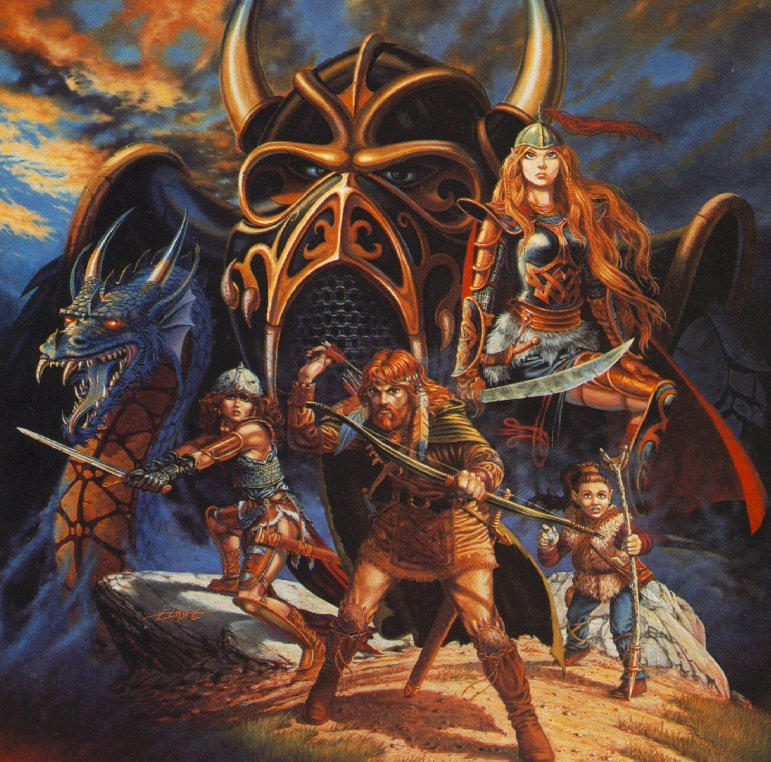

Dragonlance e sua importância histórica
postado 07 abril 2022 Dragonlance é um universo compartilhado criado por Laura e Tracy Hickman, e ampliado por Tracy Hickman e Margaret Weis sob a direção da TSR, ...
Leia maisDragonlance é um universo compartilhado criado por Laura e Tracy Hickman, e ampliado por Tracy Hickman e Margaret Weis sob a direção da TSR, ...
Leia maisA plataforma de jogar RPG de mesa online Roll20 anunciou uma série de novidades para 2022. Entre elas estão iluminação dinâmica e nova ...
Leia mais
O maior sucesso do RPG nacional, Tormenta20, ganhou uma nova versão da sua Ficha de Personagem, com duas páginas ...
Leia mais